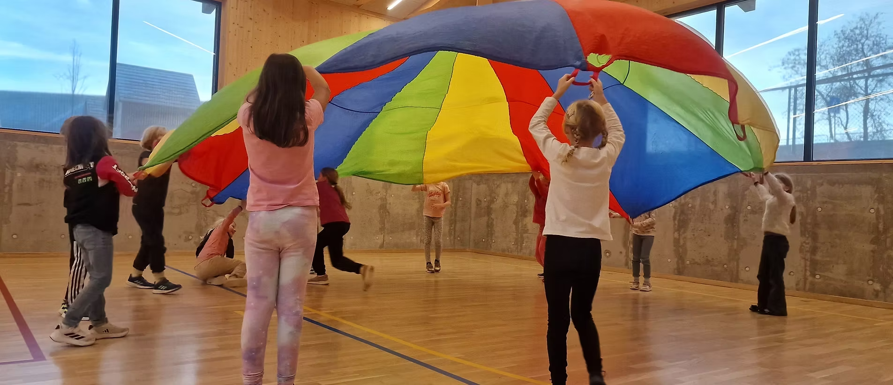

Holmestrand Internasjonale Montessori
Startpakke for designsystem — farger, typografi og komponenter hentet fra den eksisterende logoen. Til bruk som referanse ved bygging av ny nettside.
Merkevarefarger (fra logo)
Amber (hover/aktiv)#B98F3E
Disse to (blå + amber) er de eneste fargene som faktisk finnes i logoen — brukes som primær- og sekundærfarge i hele UI-et (knapper, lenker, ikoner, rammer).
Nøytrale (bærer siden)
Montessori-aksenter (bruk sparsomt — ikoner, kort, illustrasjon)
Disse tre er hentet fra fallskjermbildet/Montessori-materiell-tradisjonen. Bruk kun til småelementer (prikker, ikonbakgrunner, kortkanter) — aldri som knappefarge, navigasjonsbakgrunn eller store flater. De skal krydre, ikke styre.
Typografi
Display / H1
Læring gjennom lek og nysgjerrighet
Display / H2
Barnehage og skole i Holmestrand
Body
Montessori-pedagogikken bygger på respekt for barnets egen utvikling, med konkretiseringsmateriell og aldersblandede grupper.
Body soft
Åpningstider, kontaktinfo og annen underordnet informasjon.
Fredoka (display) — rund, vennlig, leken uten å bli barnslig. Work Sans (body) — nøytral og lettlest for lengre tekst. Begge lastes fra Google Fonts i <head>.
Knapper
Navigasjon (eksempel)
Holmestrand Internasjonale Montessori
Kort — barnehage / skole
Barnehagen
Aldersblandede grupper, konkretiseringsmateriell og trygge rammer for de yngste.
Om barnehagen
Skolen
Barnetrinn og ungdomstrinn med Montessori-pedagogikk gjennom hele skoleløpet.
Om skolen
Forside — hero og bildebruk
Ekte bilde fra skolen brukt som hero. De resterende feltene er plassholdere i merkevarefargene — bytt ut med ekte foto fra skolehverdagen eller lisensierte stockbilder når de er klare.

Holmestrand Internasjonale Montessori
Læring gjennom lek og nysgjerrighet
Barnehage og skole i Holmestrand, bygget på Montessori-pedagogikkens respekt for hvert enkelt barn.
Dette fotoet (fra fallskjermleken i gymsalen) er det eneste ekte bildet klart til bruk foreløpig — sterk kandidat til hero fordi det viser bevegelse, fellesskap og de sterke primærfargene som går igjen i Montessori-materiell.
Foto — barn i lek, gymsal/uterom
Foto — konkretiseringsmateriell
Foto — barnehageavdeling
Foto — skolehverdag/klasserom
Foto — ansatte/pedagog med barn
Plassholderne over skal erstattes med: (1) ekte bilder fra skolens egen hverdag når dere har fått samtykke/fotodag, eller (2) i mellomtiden, lisensierte stockbilder fra Unsplash/Pexels av tilsvarende motiv. Ikke publiser plassholderfargene i produksjon — de er kun en visuell guide for hvor bilder skal inn og hvilken stemning/fargebalanse de bør ha.
Sideoversikt og innhold
Full struktur for den nye siden, til bruk som brief ved bygging.
- Kort, varm intro-tekst om Holmestrand Internasjonale Montessori som helhet
- Tydelig vei inn til hhv. Barnehage og Skole (mange vet allerede hva de leter etter)
- Bilder fra hverdagen — ikke stockbilder
- Kontaktinfo og adresse rett synlig
02 · Fagstoff
Om Montessori
- Forklaring av Montessori-metoden — aldersblandede grupper, konkretiseringsmateriell, selvstendighet
- "Hjelp meg å gjøre det selv" — kjerneprinsippet forklart enkelt
- Hvorfor foreldre velger Montessori fremfor kommunal skole/barnehage
- Aldersgrupper/avdelinger
- En dag i barnehagen (dagsrytme)
- Opptak: søknadsprosess, frist, opptakskriterier, ventelister
- Priser/foreldrebetaling, evt. lenke til Foreldreportalen
- Ansatte/pedagogisk leder
- Trinnstruktur (barnetrinn/ungdomstrinn)
- Fagtilbud og hvordan Montessori følges opp gjennom skoleløpet
- SFO-tilbud og åpningstider
- Opptak/søknadsprosess for skoleplass
- Lærerkollegiet/kontaktlærere
- Hva skal barnet ha med, oppstartsrutiner
- Viktige datoer for nye familier
- Ofte den mest besøkte siden for nye foreldre — bør være lett å finne fra forsiden
06 · Aktivitet
Kalender / Nyheter
- Skolerute, ferier, planleggingsdager
- Aktuelle hendelser, prosjekter, arrangementer
- Viser at skolen "lever" — mangler helt på dagens side
- Presentasjon av ledelse (Carsten Holm Tobiassen m.fl.), lærere, pedagoger
- Styret — relevant å synliggjøre siden det er stiftelse/samvirkeforetak
- Egne kontaktpunkt for barnehage vs. skole (ulike ansvarlige/telefonnumre)
- Kart/adresse (Eikelund 8)
09 · Diverse
Praktisk informasjon
- Vedtekter/GDPR/personvern (lovpålagt for stiftelser og skoler)
- Lenke til FAU (foreldreutvalg) hvis det finnes
Til Claude Code
Alle farger og fonter er satt som CSS-variabler i :root øverst i filen — kopier disse direkte inn i det nye prosjektets stilark. Amber/blå er de to bærende UI-fargene (knapper, lenker, kort-kanter, navigasjon). Rødt/gult/grønt er kun for sparsomme aksenter (ikoner, prikker, illustrasjon) — ikke UI-basisfarger. Bakgrunn holdes nøytral (hvit / varm off-white) slik at fargene fra logo og bilder får rom til å puste.